The Bernoullis: Swiss (1700–1782)
It is perhaps unique in the history of mathematics that so many members of one family have enjoyed distinguished careers in mathematics. This is precisely the case with the Bernoulli family. Here we will focus on Jacob Bernoulli, his younger brother Johann Bernoulli, and Johann’s son Daniel Bernoulli.
We begin with the eldest of the three family mathematicians whom we will highlight here: Jacob Bernoulli, who was born on December 27, 1654, in Basel, Switzerland, to Nicolaus (aka Niklaus, 1623–1708) and Margaretha Schönauer.1 As was not unusual for the time, parents wanted their children either to prepare to take over a family business or to enter the ministry. In Jacob’s case, it was the latter. Following the guidance of his parents, he studied philosophy and theology at the University of Basel, earning a master’s degree in philosophy in 1671 and a second degree in theology, in 1676. Despite these official studies, Jacob secretly, and against his parents’ wishes, studied mathematics and astronomy privately. Although he may have eased the family’s dislike for the study of mathematics, he was not alone in this sort of familial pressure; the other mathematicians seemed to have faced similar pressures. Between the ages twenty-two and twenty-eight, Jacob traveled throughout Europe, visiting the leading scientists and mathematicians of his time.
Returning to the University of Basel in 1683, he began teaching mechanics as it relates to liquids and solids. Having a degree in theology
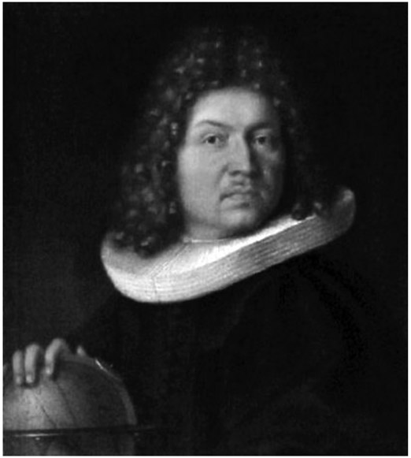
Figure 22.1. Jacob Bernoulli. (Painting by Jacob Bernoulli’s brother Nicolaus Bernoulli [1662–1716], 1687.)
qualified him for an appointment in the church, which he promptly turned down so that he could pursue his true areas of interest: mathematics and science. In 1684, he married Judith Stupanus, with whom he had two children. He continued to correspond with mathematicians and was particu larly fascinated with the works of René Descartes and Gottfried Wilhelm Leibniz. Jacob Bernoulli provided the developing subject of mathematics with one of its more significant cornerstones: the natural logarithm,
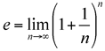
which evolved from his study of compound interest. He found that if a man invests $1.00 and pays 100 percent interest per year, at the end of the year, the value is $2.00. If the interest is computed and added twice in the year, then the $1 is multiplied by 1.5 twice, yielding $1.00 ∙ 1.52 = $2.25. By compounding quarterly, the investment yields $1.00 ∙ 1.254 = $2.4414 . . ., and by compounding monthly, the investment yields $1.00 ∙ (1.0833 . . .)12 = $2.613035 . . . . By compounding weekly, he found it to be $2.692597 . . .; compounding daily yields $2.714567 . . . . With ever more frequent compounding, the amount will reach $2.718281828459. . . . as a limit. This is the natural logarithm, and it is designated by the letter e, a symbol that was popularized by Leonhard Euler.
In 1687, he finally settled down and accepted the position of professor of mathematics at the University of Basel. This also gave him further opportunity to continue to investigate discoveries by the English mathematicians Isaac Barrow (1630–1677) and John Wallis (1616–1703), and which motivated him to further study infinitesimal geometry.
Having now secured the position at the University of Basel, he had also begun to tutor his younger brother Johann in mathematics. The brothers became interested in Leibniz’s 1684 paper on differential calculus, which was published in his Acta Eruditorum, and might be considered as the first appearance of calculus as we know it. However, at about the same time, Isaac Newton also developed the concept of calculus, which he called fluxions. It is well known that a controversy evolved regarding who was the first to come up with this seemingly new field of mathematics. Of course, the Bernoulli brothers supported Leibniz. Today we use Leibniz’s subject title of “differential calculus” as well as his symbols. In a paper he published in 1690, Jacob Bernoulli was the first to use the term “integral calculus” when analyzing a curve. In 1691, Jacob wrote about the catenary curve, which is a curve formed by a chain that is supported on both ends at equal heights; today it is often seen in the construction of bridges. The catenary curve can be shown on the xy-plane as a chain dropping at x = 0 to its lowest height, y = a; it is given by the equation
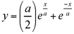
.It can also be expressed in terms of a hyperbolic cosine function via the equation
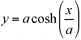
. By 1695, he further enhanced the design of bridges by applying calculus to his analyses.As the two Bernoulli brothers further grappled with applications of calculus, which was an area that was not clearly understood by many mathematicians at the time, a rivalry between them evolved. They began to criticize each other in print, and at the same time challenge each other with mathematical problems, which has moved the understanding of mathematics further along. By 1697, their relationship completely dissolved and they separated and were no longer in communication.
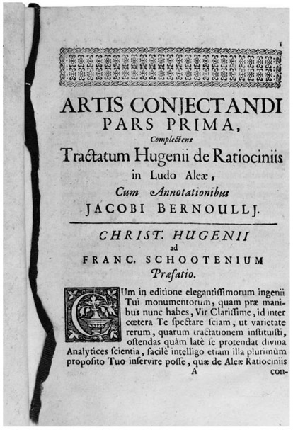
Figure 22.2. Ars Conjectandi, published 1713. (Milan, Mansutti Foundation.)
Jacob Bernoulli died in Basel, Switzerland, on August 16, 1705. It is unfortunate that he did not live to see the publication in 1713 of Ars Conjectandi (The Art of Conjecturing), which was a summary of most of his finest discoveries (see fig. 22.2). It included, among other topics, the theory of permutations and combinations, and the famous Bernoulli numbers, which were used to compute easily the sums of powers of any consecutive integers. Discussing them, he was reported to have said, “with the help of this table, it took me less than half of a quarter of an hour to find that the 10 powers of the first 100 numbers being added together will yield the sum 91,409,924,241,424,243,424,241,924,242,500.”2 The values of the first ten Bernoulli numbers, Bn, are given in figure 22.3, where, if n is a multiple of 4 and not equal to zero, then Bn < 0, and all others are positive—with the possible exception of n = 1, which is
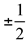
. Bernoulli numbers grew out of a long term interest in the sums of integral powers, which has fascinated mathematicians since antiquity. Curiously enough, these numbers were the subject of the first complex computer program.The Bernoulli numbers can be defined as Bk in the formula for the series sum:
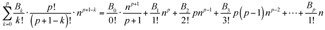
Only the ambitious reader will want to pursue this further.
Ars Conjectandi also further introduced the subject of probability and Bernoulli’s now-famous law of large numbers, which are used today when sampling statistical populations. The law of large numbers states that the frequencies of events with the same likelihood of occurrence even out over time when there are many trials or events. As the number of events increases, the actual ratio of outcomes will converge on the theoretical, or expected, ratio of outcomes.
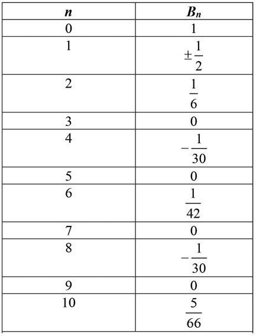
Figure 22.3. Bernoulli numbers for n = 0 through n = 10.
Bernoulli’s work was notable for three reasons. First, he performed his research with only a superficial understanding of those who had come before him—he was able to read a copy of Christiaan Huygens’ Reasoning in Games of Chance—but it’s clear from his work that he had not read the letters of Pascal and Fermat, Pascal’s Treatise, and several other texts that would have informed his research. Second, he progressed much further in the study of probability than those who came before him, despite not having access to their writings. Third, and finally, he undertook to explain not only games of chance, where the outcomes are assumed to be fair and the sole output of cards, dice, or coins; he also sought to explain human problems such as decision making. Jacob Bernoulli’s works were published posthumously in a two-volume set titled Opera Jacobi Bernoulli, in 1744 (see fig. 22.4).
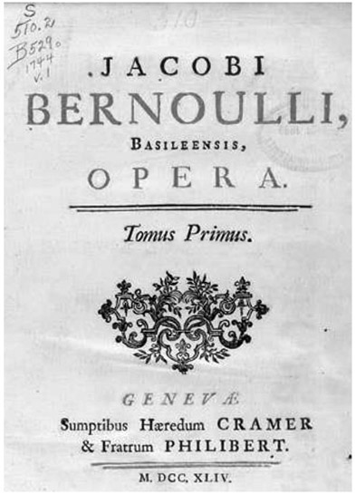
Figure 22.4. Volume 1 of Opera Jacobi Bernoulli.
We now turn to Johann Bernoulli (see fig. 22.5), one of Jacob Bernoulli’s younger brothers, who was born in Basel, Switzerland, on August 6, 1667, twelve years after Jacob’s birth, and was the tenth child of Nicolaus and Margaretha Bernoulli. His father, Nicolaus Bernoulli, was a pharmacist and wanted his son Johann eventually to take over his business and therefore guided Johann’s university studies in that direction.
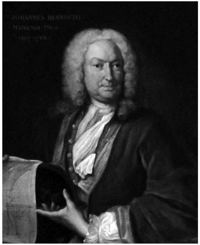
Figure 22.5. Johann Bernoulli. (Oil on canvas by Johann Rudolf Huber, 1740.)
Not interested in studying business, Johann elected to study medicine, in an attempt to somewhat satisfy his parents. But this subject also did not interest him. His older brother Jacob enticed him to consider mathematics, which ended up being the right fit for him. The brothers engaged themselves initially in the new subject of calculus (see fig. 22.6), which, as mentioned earlier, was developed by Leibniz.
Despite his overriding interest in mathematics, he did complete his studies in medicine at the University of Basel, where he received his doctorate in 1694. Much to his father’s disappointment, he subsequently immersed himself in mathematics, publishing two books on differential and integral calculus. Soon thereafter, in 1694, he married Dorothea Falkner, with whom he had three boys, one of whom was Daniel, whose career we shall consider later. This was also a time when he began his position as professor of mathematics at the University of Groningen in the Netherlands. Johann seems to have been rather happy at Groningen, as evidenced by a note he wrote on July 25, 1696, in which he stated “Patria est, ubi bene est” (“Where there is bread, there is my homeland”) (see fig. 22.7).
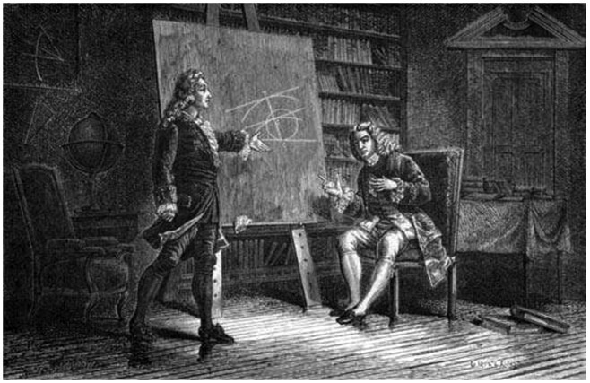
Figure 22.6. Jacob and Johann Bernoulli. (Engraving ca. 1870–1874.)
Throughout his life, he has had some very famous students, such as Leonhard Euler and the French mathematician Guillaume-François-Antoine, marquis de l’Hôpital (1661–1704), who is still known today for the mathematical procedure known as l’Hôpital’s rule, which is used in differential calculus. Curiously, l’Hôpital offered to pay Johann, if he would provide him with some mathematical discoveries. Interestingly, Johann Bernoulli later signed a contract with l’Hôpital, which allowed l’Hôpital to use Johann’s work without proper attribution, and thus he published Analyse des infiniment petits pour l’intelligence des lignes courbes in 1696, which mainly consisted of the work of Johann Bernoulli, including what we know today as l’Hôpital’s rule (see fig. 22.8).
The study of calculus became ever more popular and was further popularized when Johann posed the brachistochrone problem, which engaged a variety of mathematicians at the time. The problem involved taking a wire attached at two points at different heights, and placing a bead on the wire. Then letting the bead slide along the wire (assuming no friction), from the higher-height endpoint. The challenge was to determine what the shape of the curve should be in order for the bead to land at the lowest point in the least amount of time. Using calculus, it was determined by him that the curve is an inverted cycloid. The cycloid curve can also be generated by the path that a point on a circle travels while the circle is rolling along a straight-line path, as shown in figure 22.9.
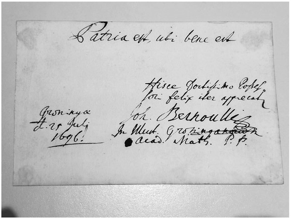
Figure 22.7. Johann Bernoulli’s note.
In 1705, Johann’s family urged him to return to Basel. During the journey back, he learned of Jacob’s death from tuberculosis. Initially, Johann had returned to Basel so as to assume the professorial chair for Greek at the University of Basel. After the death of his brother, though, he was able to get the now-vacant position of professor of mathematics at the university of Basel, which previously had been held by his brother. It must be said that, despite the loss of Jacob, Johann was delighted to change his plans when the mathematics position became available.
In 1713, Johann got actively involved in supporting Leibniz in the discussions about who should be credited with discovering calculus. He showed that Leibniz’s work was able to solve problems that Newton’s fluxions could not accomplish. As a further effort to support Leibniz’s position regarding the development of calculus, he published a text on integral calculus in 1742 and soon thereafter a text on differential calculus.
Apparently, Johann Bernoulli had a rather-jealous personality, which caused his previously mentioned competition and subsequent fallout with his brother. A similar problem disrupted his relationship with his son Daniel Bernoulli, who was also a very gifted mathematician. In 1734, Daniel wrote an important work, Hydrodynamica, which he published in 1738. This was about the same time that his father, Johann Bernoulli, published his work Hydraulica. Once again, a dispute evolved about the ownership of the material. It is believed that Johann plagiarized from his son Daniel’s work.3 This further destroyed their relationship. Johann Bernoulli died on January 1, 1748, in Basel, Switzerland, while still at odds with his son Daniel.
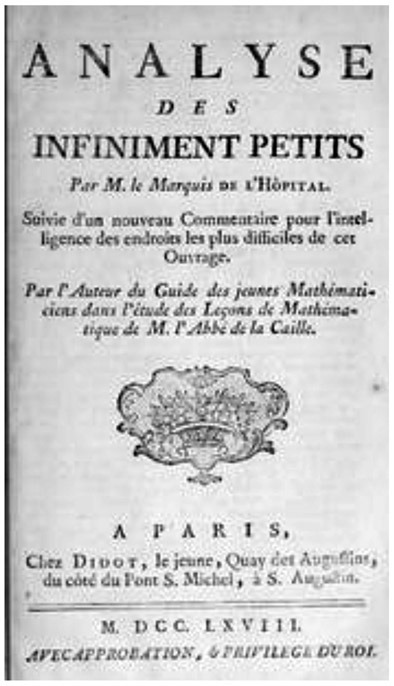
Figure 22.8. Analyse des infiniment petits pour l’intelligence des lignes courbes, 1696.
Johann Bernoulli’s son Daniel was born on February 8, 1700, in Groningen, Netherlands. Despite his father’s urging that Daniel study business, Daniel insisted on studying mathematics. He later delved into some business study but ended up studying medicine at his father’s suggestion, with the understanding that his father would teach him mathematics at home.
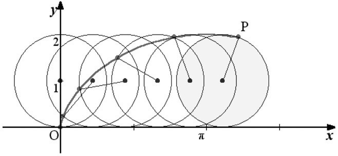
Figure 22.9. Cycloid curve formed by the path of a point on a circle that is rolling along a straight-line path..
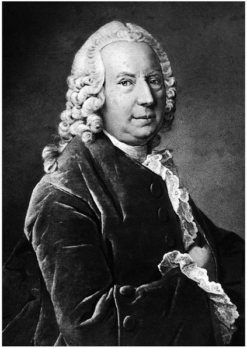
Figure 22.10. Daniel Bernoulli. (Portrait on albumen paper copy mounted on cardboard, ca. 1750.)
Eventually, in 1721, Daniel earned his doctorate in anatomy and botany. As already mentioned, his father was a rather jealous person. This manifested itself once again in a scientific contest at the University of Paris, when Daniel was tied with his father for first place. As a result, Johann banned Daniel from his house. Johann carried this grudge for the rest of his life.
Daniel Bernoulli befriended the famous mathematician Leonhard Euler, who at the time lived in St. Petersburg; Daniel Bernoulli traveled there in 1724 to assume the position of professor of mathematics. He did not seem to enjoy the position, a situation made even worse by a brief illness he suffered in 1733. So he returned to the University of Basel, where he held professorial positions in medicine, metaphysics, and natural philosophy.
Daniel Bernoulli was a brilliant mathematician and scientist whose talents clearly rivaled those of his father. Eventually, though, the rivalry became counterproductive, since he won many prizes, some of which his father felt should have been awarded to the father and resultingly evicted Daniel from his home. We could ask ourselves, what might be the most important discovery that Daniel Bernoulli provided future science? In what is known today as the Bernoulli effect, Daniel proved that when a fluid flows through a region in which its speed increases, its pressure will fall. He correctly described the effect mathematically. The Bernoulli effect has many real-life applications, and it explains why aircraft wings provide lift to the plane. Essentially, what this explains is that the wing is shaped so that air flows faster over the upper part of the wing than over the lower. This results in an air pressure difference that produces lift. After a rather full life of brilliance, Daniel died on March 17, 1782, in Basel, Switzerland
Thus, we have a good overview of what is probably the most famous mathematics family, the Bernoullis. They interacted with the leading mathematicians over a century to provide many significant breakthroughs in the development of mathematics. They have contributed not only to mathematics but also to science, philosophy, business, and a general knowledge to help us better understand our environment.